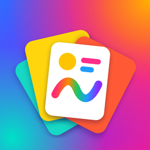

PasteUp
Privacy Policy
Last updated: November 5, 2026
PasteUp is a simple app for drawing on, marking up and redacting images. We do not collect, store, share or sell any personal information.
- No accounts and no sign-in.
- No advertising and no analytics or tracking.
- No in-app purchases.
- The app does not use the internet. Images you open, paste or create are edited on your device and are never sent to us or anyone else.
- Your work is not saved by the app. It stays in memory while you edit and is gone when you exit, unless you save, copy or share it yourself.
- Clipboard: the app checks whether the clipboard holds an image so it can show the Paste button, and reads the image only when you tap Paste. Copy actions put an image on the clipboard only when you tap them.
- Photos: you choose pictures with the system photo picker, so the app only receives the ones you pick. It asks for permission to add to your library only so it can save your image when you tap Save to Photos.
- When you use Share, the image goes to the app or person you choose, and their privacy terms apply.
- The app does not use the camera, microphone, location or contacts.
Because we collect no data, there is nothing to access, correct or delete on our side.
If this policy changes, we will update this page and the date above.
Contact: questions about this policy can be sent through this page.
Política de privacidad
Última actualización: 5 de noviembre de 2026
PasteUp es una app sencilla para dibujar, marcar y tapar información en imágenes. No recopilamos, guardamos, compartimos ni vendemos ninguna información personal.
- Sin cuentas ni inicio de sesión.
- Sin publicidad, sin analíticas y sin rastreo.
- Sin compras dentro de la app.
- La app no usa internet. Las imágenes que abres, pegas o creas se editan en tu dispositivo y nunca se envían a nosotros ni a nadie.
- La app no guarda tu trabajo. Se mantiene en memoria mientras editas y desaparece al salir, salvo que tú lo guardes, lo copies o lo compartas.
- Portapapeles: la app comprueba si el portapapeles contiene una imagen para mostrar el botón Pegar, y solo lee la imagen cuando tocas Pegar. Las acciones de copiar ponen una imagen en el portapapeles solo cuando las tocas.
- Fotos: eliges las imágenes con el selector de fotos del sistema, así que la app solo recibe las que eliges. Pide permiso para agregar a tu fototeca solo para guardar tu imagen cuando tocas Guardar en Fotos.
- Cuando usas Compartir, la imagen va a la app o persona que elijas, y se aplican sus condiciones de privacidad.
- La app no usa la cámara, el micrófono, la ubicación ni los contactos.
Como no recopilamos datos, no hay nada que consultar, corregir ni borrar de nuestro lado.
Si esta política cambia, actualizaremos esta página y la fecha de arriba.
Contacto: puedes enviar tus preguntas sobre esta política a través de esta página.